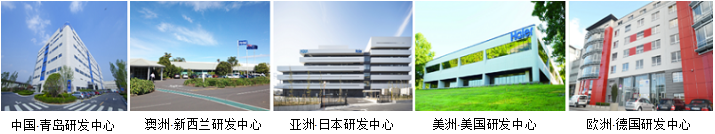

从2005年开始，海尔进入全球化品牌战略阶段，全球化和国际化的不同在于其核心是本土化，这和国内企业OEM不同，也和日韩企业派驻本国员工到全球各地不同，海尔是创立自主品牌，在海外建立本土化设计、本土化制造、本土化营销的“三位一体”中心，员工都是当地人，更了解当地用户的个性化需求。
现在海尔已经在全球建立五大研发中心，21个工业园，66个营销中心，全球员工总数超过6万人。
其实，海外创牌之路很难，一般在国外培育一个品牌的赔付期是8到9年，所以，作为一个创自主品牌的企业，需要付出，需要有耐力。从目前中国品牌海外市场的占比来看，虽然中国家电产量占到全球的49.1%，但中国品牌的品牌份额只有2.89%，而这2.89%里面有86.5%是海尔品牌，也就是说，每十台中国品牌的家电，有8台是海尔品牌。
在这个阶段的标志事件是：2012年，海尔收购三洋电机在日本、东南亚的洗衣机、冰箱等多项业务，成功实现了跨文化融合；之后，海尔还成功并购新西兰高端家电品牌斐雪派克（Fisher&Paykel）；2016年1月15日，海尔全球化进程又开启了历史性的一页——海尔与GE签署战略合作备忘录，整合通用电气家电业务，不仅树立了中美大企业合作的新典范，而且形成大企业之间超越价格交易的新联盟模式，《华尔街日报》形容海尔创造了“中国惊喜”。海尔在国际市场真正“走上去”，成为全球大型家用电器的第一品牌。